Wisata Pacitan
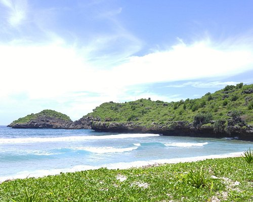 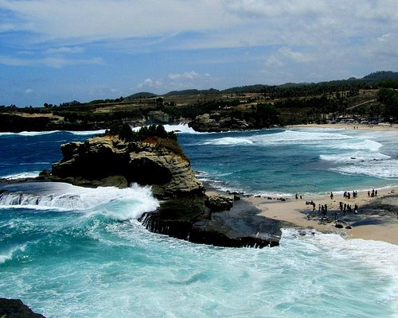 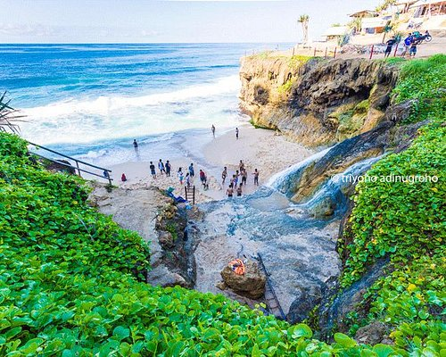 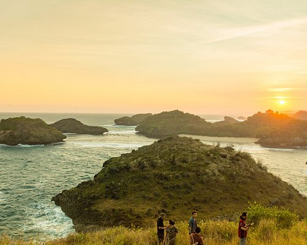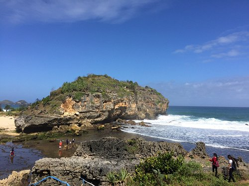 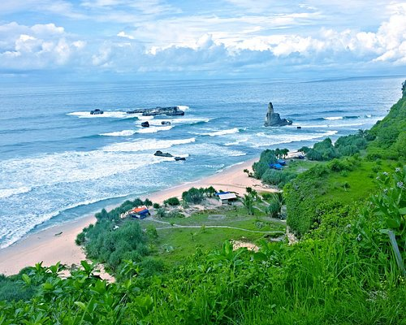 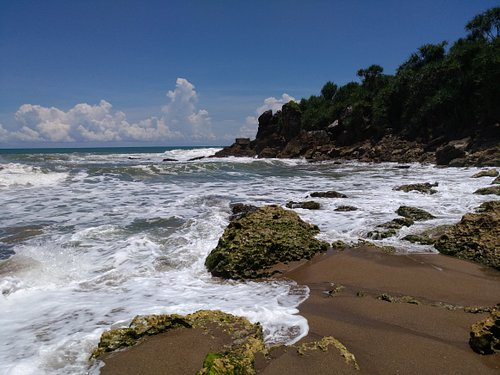 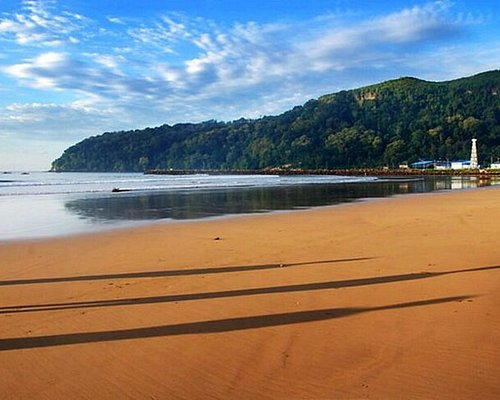
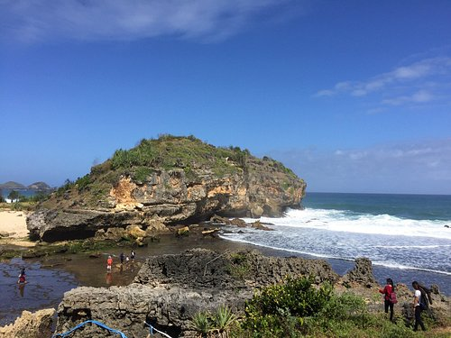 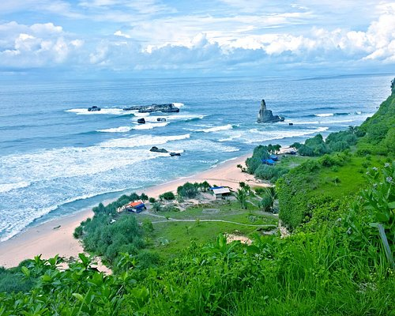 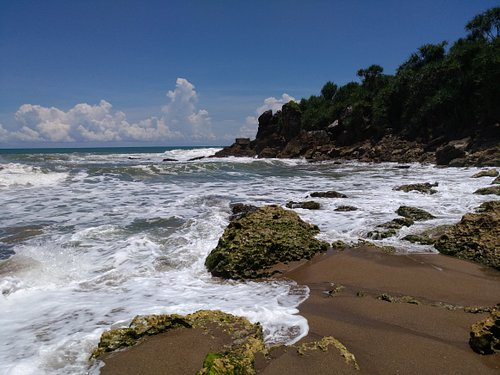 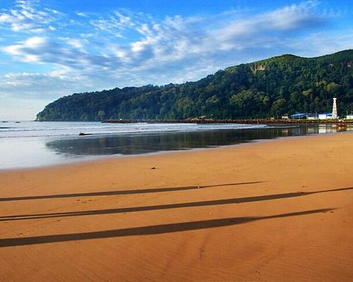
Kabupaten Pacitan adalah sebuah wilayah kabupaten yang terletak di Provinsi Jawa Timur, Indonesia. Ibu kotanya adalah Kecamatan Pacitan Kota. Pada zaman Hindia-Belanda, daerah ini disebut Kawedanan Pacitan yang terkenal dengan tujuan wisatanya. Di sini terdapat rumah kelahiran/peninggalan Susilo Bambang Yudhoyono, mantan Presiden ke-6 Republik Indonesia. Jalur menuju Pacitan dapat ditempuh melalui Ponorogo, Wonogiri dan Trenggalek, yang juga merupakan Jalan Lintas Selatan yang menghubungkan Pacitan hingga Tulungagung dan Blitar
Pantai Srau
Ada dua rute utama yang bisa ditempuh untuk mencapai Pantai Srau, yakni dari Pacitan Kota dan dari Solo. Jika berangkat dari Pacitan Kota, ambillah rute menuju Pantai Teleng Ria, kemudian ikuti jalan bus rute Solo. Setibanya di kantor Desa Dadapan, belok ke kiri untuk menuju Pantai srau. Terus ikuti jalan hingga menemukan pertigaan dengan petunjuk arah menuju Pantai srau, kemudian belok kek kiri. Sementara itu, jika anda berangkat dari Solo, ambillah rute perjalanan menuju Pacitan. Setelah melewati Pasar Ngadirejan, ambillah jalan ke kanan. Lanjutkan perjalanan hingga melewati Pasar Dilem, lalu belok ke kanan. Ikuti jalan utama sampai menemukan pertigaan dengan papan petunjuk arah Pantai Srau, kemudian belok ke kiri.
Pantai Klayar
Pantai Pacitan berlokasi di Desa Sendang, Kecamatan Donorojo, Kabupaten Pacitan. Tepatnya sekitar 40 m di barat kota Pacitan, dari Surabaya dan sekitarnya ambil jalan melewati Mojokerto, lalu lanjutkan dengan rute Jombang-Kertosono-Nganjuk-Madiun-Ponorogo-Pacitan. Sementara dari Yogyakarta, ambil rute dari Jalan Malioboro. Kemudian, setelah bertemu dengan perempatan kantor pos, ambil jalur kiri dan ikuti jalan sampai Wonosari, Yogyakarta. Setelahnya, ikuti jalan sampai di Piyungan-Pathuk-Wonosari-Pracimantoro-Giribelah-Punung hingga tiba di Pantai Klayar.
Pantai Banyu Tibo
Dari Kabupaten Pacitan, Pantai Banyu Tibo berjarak sekitar 30 km dan dapat ditempuh dengan waktu 50 menit perjalanan. Untuk sampai di lokasi ini, kamu dapat melaju ke arah barat menuju Jl. Nasional III sekitar 15 km. Setelah itu, ambil jalan Punung - Goa Gong lurus dan terus ikuti jalan tersebut hingga bertemu Desa Kalak. Selanjutnya, kamu bisa melaju ke barat daya melalui Jl. Banyu Tibo atau Jl. Nampu Kalak ke arah Desa Widoro. Kurang lebih 4 km dari sini, kamu akan sampai di Pantai Banyu Tibo.
Pantai Kasap
Lokasi Pantai Kasap terletak di daerah Dusun Ketro (Gumaharjo), Desa Watu Karung, Kecamatan Pringkuku, Kabupaten Pacitan, Jawa Timur. Rute ke Pantai Kasap Pacitan bisa ditempuh sekitar 45 menit dari pusat Kota Pacitan ke arah Selatan menuju Pantai Watu Karung.